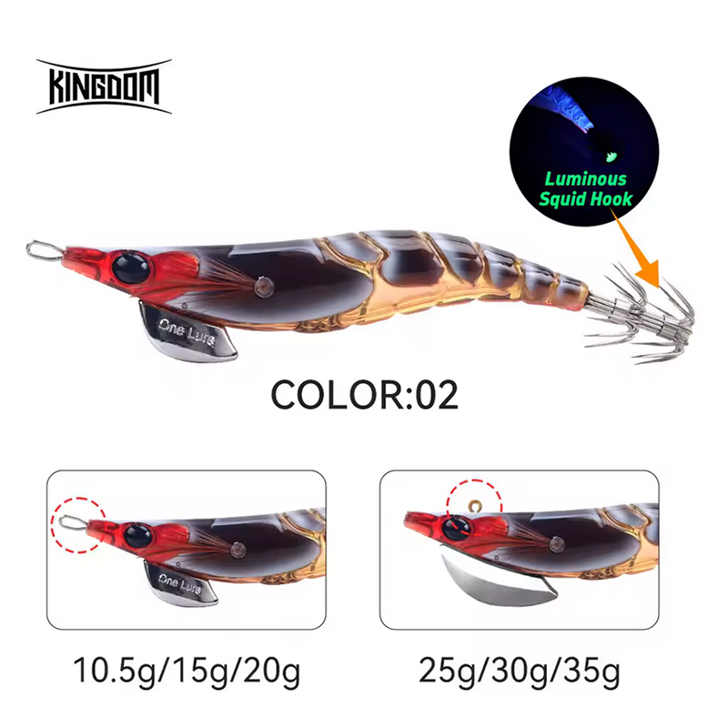

Egis Low Cost
Inicio
Señuelos
YAMASHITA
DTD
YO-ZURI
LETOYO
KINGDOM
SQUID KING
OTROS
Componentes
Color Egis
Acerca de
KINGDOM REINO – Análisis completo (Color 02)

✅ Egi muy natural y discreto, ideal para calamares desconfiados en aguas claras.
🎨 Características
Diseño:
Cuerpo segmentado tipo gamba con acabado translúcido oscuro, muy realista.
Color base:
Marrón ámbar con cabeza roja, imitando crustáceos y presas naturales.
Ojos:
Ojos grandes con alto contraste, facilitando el punto de ataque.
Coronas:
Coronas con leve luminiscencia, útiles como referencia visual, no pensadas para noche cerrada.
Pesos disponibles:
10.5g / 15g / 20g y 25g / 30g / 35g.
🌤️ Condiciones ideales de uso
☀️
Día soleado:
Excelente, el color oscuro se integra perfectamente en el entorno.
🌊
Aguas claras:
Muy eficaz gracias a su perfil discreto.
🌅
Amanecer / Atardecer:
Buen rendimiento manteniendo naturalidad.
🪨
Fondos rocosos o mixtos:
El tono marrón destaca de forma natural.
🌙
Noche con luz ambiental:
Uso limitado; no es un egi específico para nocturna.
🧠 Comportamiento esperado
👉 Egi de confianza para situaciones complicadas.
👉 Ideal cuando los colores vivos generan rechazo.
👉 Perfecto para pesca lenta y presentaciones largas.
👉 Muy útil en zonas con alta presión de pesca.
⚙️ Resumen práctico
Condición
Eficiencia
🌊 Agua clara
🟢🟢 Muy alta
☀️ Día soleado
🟢🟢 Muy alta
🌅 Amanecer / Atardecer
🟢 Alta
🦑😴 Calamares pasivos
🟢🟢 Muy alta
🌙 Noche con algo de luz
🟡 Media
🛒 Comprar KINGDOM REINO